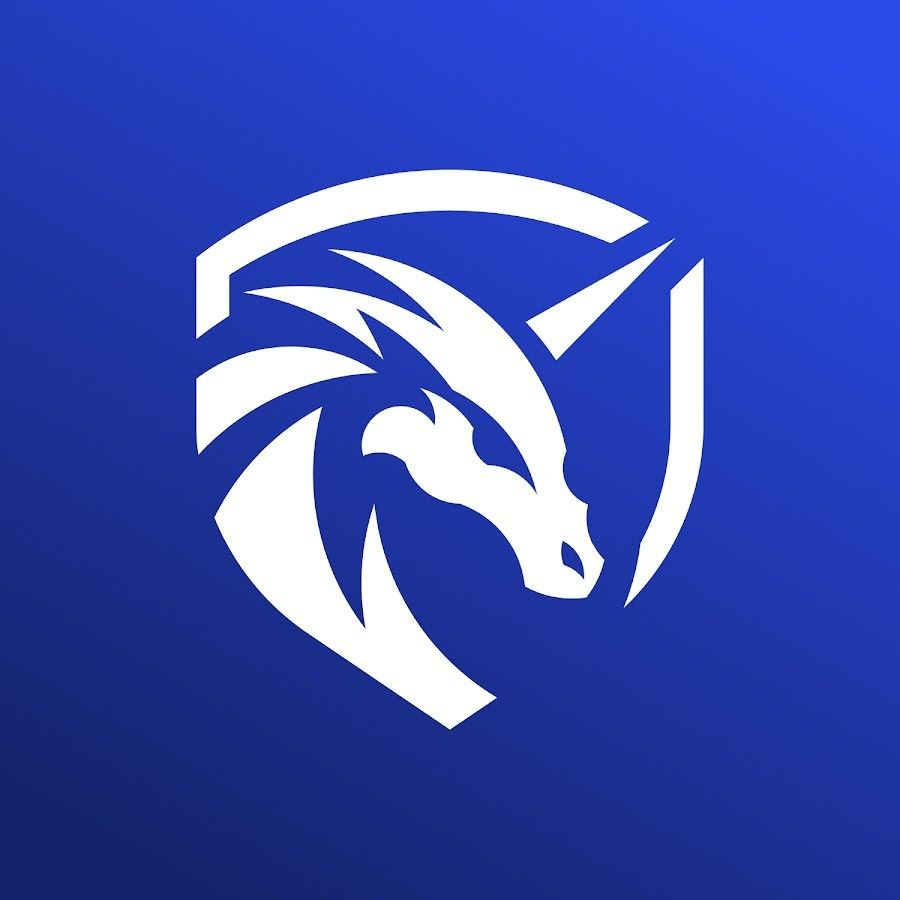
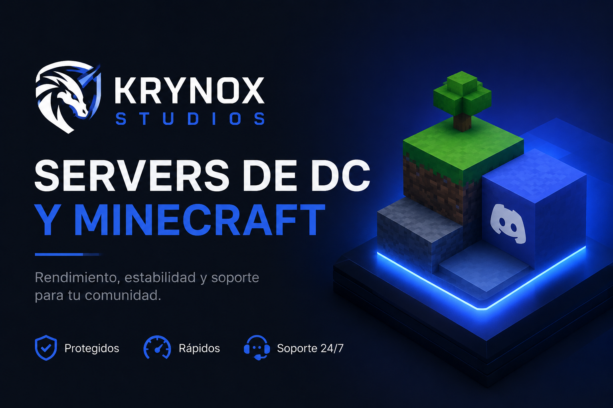

Servidores Minecraft
Creamos servidores survival, SMP, roleplay, factions, skyblock o personalizados con plugins, permisos, economía, protecciones, ranks y ajustes de rendimiento.

Krynox Studios Pedir proyectoMinecraft servers + Discord communities
En Krynox Studios desarrollamos servidores de Minecraft y configuramos Discords completos para streamers, comunidades y proyectos gaming que quieren abrir con una imagen seria.

Lo que vendemos de verdad
Krynox Studios se encarga de la parte técnica y de la estructura de comunidad para que puedas centrarte en lanzar, atraer jugadores y mantener vivo el proyecto.
Servicios
Creamos servidores survival, SMP, roleplay, factions, skyblock o personalizados con plugins, permisos, economía, protecciones, ranks y ajustes de rendimiento.
Diseñamos canales, roles, categorías, bots, tickets, verificación, normas, anuncios y una estructura clara para jugadores, staff y novedades.
Damos soporte con actualizaciones, backups, revisión de errores, mejoras, nuevas funciones y ayuda técnica para que el proyecto no se quede parado.
Proceso
Elegimos modalidad, estética, normas, roles y funciones principales.
Montamos servidor, plugins, permisos, Discord, bots y canales esenciales.
Revisamos rendimiento, errores, experiencia de jugador y flujo de comunidad.
Te entregamos el proyecto listo y podemos acompañarte con mantenimiento.
Planes
Todos los planes están disponibles en nuestro Discord. Entra, abre ticket y te ayudamos a elegir el paquete que encaje con tu servidor.
Gratis
2 boosts
3 boosts
Contacto
Entra al Discord de Krynox Studios, abre un ticket y dinos la modalidad, el tamaño de la comunidad y qué necesitas. Te respondemos con una propuesta clara para empezar.
Únete al grupo oficial para pedir presupuesto, resolver dudas o contratar un plan.